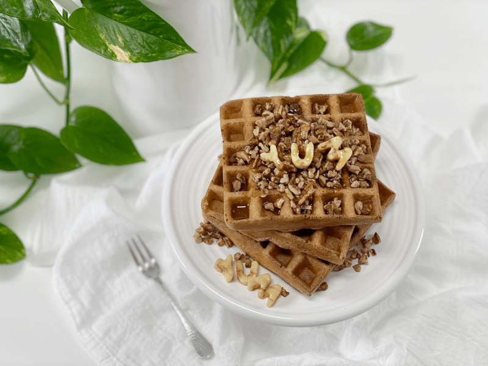
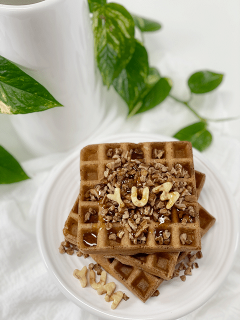
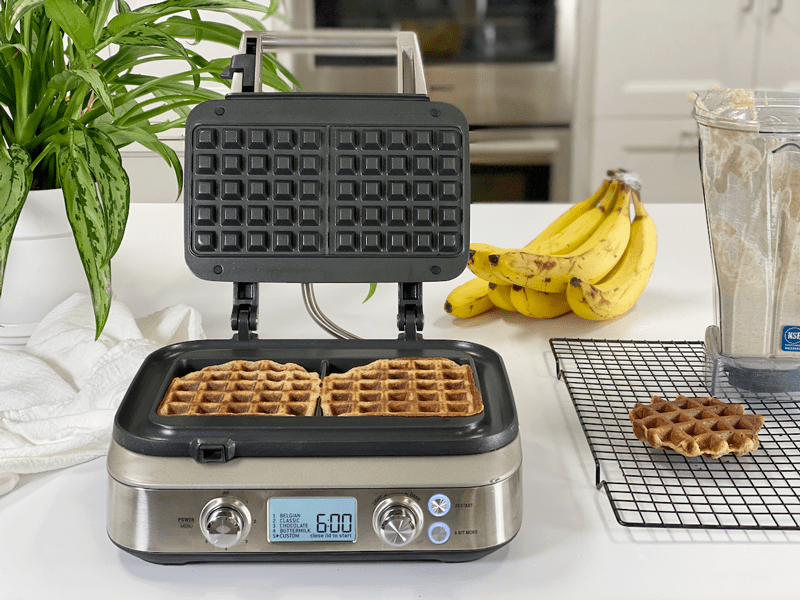
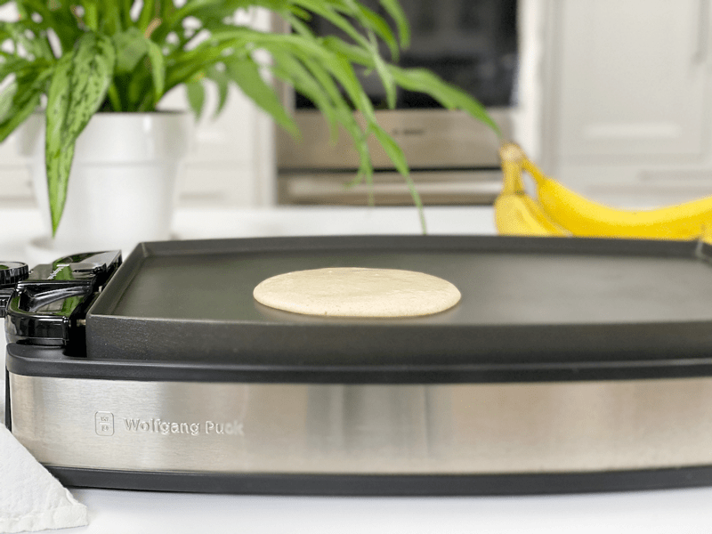
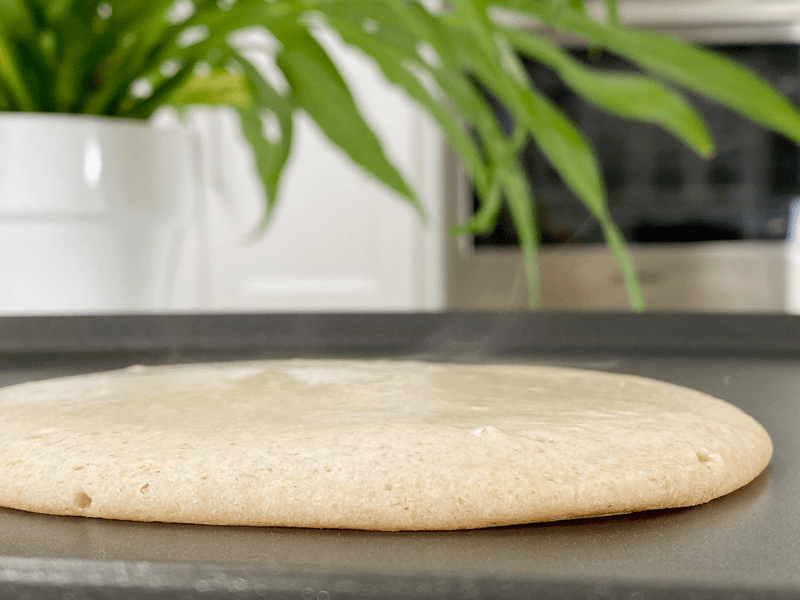
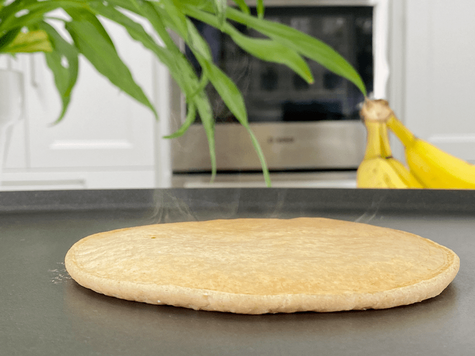
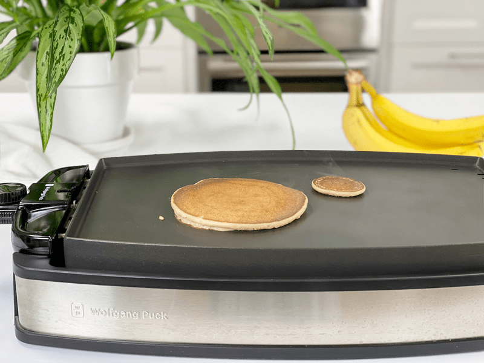

Cinnamon Banana Oat Waffles | Oil-Free
Oh, for the love of waffles! These waffles are made with oats, bananas, and water. They don’t have the light and airy consistency of the traditional waffles that you most likely grew up on. They’re hearty and delicious, but be aware that they’re a little heavier than the waffles you’d eat in a restaurant, unless they too make waffles that are flour-free, gluten-free, vegan, oil-free, soy-free, and nut-free. If you are not fond of the flavor of banana…well, I lovingly say, “Maybe this isn’t the recipe for you.”

Batch Cooking
These waffles can be made in advance and frozen for future meals. I recommend flash freezing: put them in single layers on a baking sheet, slip into the freezer, and once frozen, store in an airtight freezer-safe container. This method will prevent them from sticking together.
You can also place a piece of parchment or wax paper between each waffle and freeze in a stack, but I would avoid that if possible because both parchment paper and wax paper are pricey and are typically a one-use product, which leads to more waste. Parchment paper is coated with silicone to make it non-stick, making it difficult to recycle, and wax paper is coated with wax so it’s not recyclable either.
When you or your family members are ready to enjoy a waffle or two or three, you can either toast them frozen or allow them to thaw, followed by popping them in the toaster. Our toaster has a “frozen” button that allows you to toast frozen bread, etc. If you don’t have that option, thawing first may be preferable. If you don’t have a toaster, you can warm them in the oven. Place the frozen waffles directly on a rack in the middle of the oven and turn the oven to 350 degrees (F). By the time your oven comes up to temperature, the waffle is ready. I don’t find that the waffle gets crispy enough using this method, but it’s better than nothing.
The Purpose of Each Ingredient
Water
- I chose to use water for several reasons: it doesn’t have any flavor to impact the overall recipe, it doesn’t have any calories, and it saves money! But if you wish to use a plant-based milk, I for one will not get in your way.
Ripe Bananas
- The bananas play just as important of a role as the oats do. You will want to use RIPE bananas, as they will have less of a starchy taste and they are the only “sweetener” being added to the recipe.
- Bananas also replace the fats in baked goods and add moisture.
- For more banana ideas, click (here).
Rolled Oats
- It is important to use old-fashioned rolled oats–not instant, not steel-cut… just plain ol’ rolled oats.
- The secret to these waffles is to let the batter rest for 10 minutes while the waffle iron heats up. The resting time gives the oat flour time to soak up some of the moisture, so you get crisp, fluffy waffles.
- Are they gluten-free (yes)! To learn more click (here). To learn how oats are grown and harvested, click (here).
Vanilla & Salt
- Pure vanilla extract adds the subtle and delicious flavor of vanilla that is easy to taste. It also enhances the flavor of other ingredients in more complex recipes. There are different origins of vanilla with very distinct flavors. Typically in the US, we use Madagascar vanilla which has a deep, rich flavor.
- Salt also brings out the characteristic taste and flavor in general. I recommend using good sea salt, which is what I use in place of table salt in my recipes. Learn more (here).
Ground Flax Seeds
- Flax seeds take the place of eggs in baked recipes.
- They need to be ground to a powder so the body can easily absorb the nutrients.
- They act as a binder, holding all the ingredients together.
- You can read more (here).
Ceylon Cinnamon
- There are two major types of cinnamon sold (especially here in the US) and those are Ceylon and Cassia cinnamon. They come with completely different flavor profiles. In ALL my recipes I use Ceylon, which has a sweet, almost floral aroma. If you wish to learn more about this topic, please click (here).
Technique
- This recipe was purposely created to be oil/fat-free, but that’s due to my own personal preference. It really doesn’t need and my husband who likes healthy fatty foods found these delicious. One area that might require some oil is the waffle iron. I didn’t experience any sticking but if you do, lightly spray a thin coat of oil on the iron griddles. If they still stick, you might have an old waffle iron and might require replacing.
- I experimented with making pancakes out of this batter, just in case you don’t own a waffle iron. They turned out, but we liked the waffle texture much better. The pancakes tasted great but felt heavy. Just know there are options!
It’s time, folks! It’s time to make waffles! As far as how many waffles this recipe yields will depend on the size of your waffle iron and if you fill each cavity to its capacity. I use the Breville Smart Waffle Pro, 2-Square which makes two 4″ x 4″ x 1″-thick waffles. I made roughly 8 waffles but not all were full-square-sized. Please comment below and enjoy your waffles one yummy bite at a time. blessings, amie sue

Ingredients
Yields 4 cups batter
- 2 cups water
- 3 very ripe bananas
- 1 Tbsp vanilla extract
- 3 cups gluten-free rolled oats
- 3 Tbsp ground flaxseed or 2 Tbsp psyllium husks
- 1 tsp ground Ceylon cinnamon
- 1/4 tsp sea salt
Preparation
Waffle Method
- Turn the waffle iron on and allow it to reach cooking temperature.
- Place the water, vanilla, bananas, oats, flax, cinnamon, and salt into the blender or food processor. Blend until creamy.
- By adding the liquid first, the blades in the blender carafe can move more freely.
- Pour the batter into the center of the waffle iron. Since machines run in different sizes, add enough so the batter can slightly reach out to the sides.
- I didn’t need to use any oil to prevent sticking with my waffle machine. If you feel unsure about the machine you are using you can either do a small test run or you can lightly coat all cooking surfaces of the waffle iron to help avoid sticking.
- You will need to add a bit more water to keep the batter at a pancake batter consistency, as it starts to thicken the longer it sits. If the batter is really thick, the waffles will be dense and possibly undercooked in the middle.
- With my waffle machine I set on “custom” and cook them for 6-7 minutes (until the steam coming out reduces).
-
Open the waffle iron lid and leave it open about for 20 seconds (this will help avoid sticking) before gently removing the waffle with a fork or butter knife.
-
Repeat until the batter is used up.
- Topping ideas – Cinnamon Skillet Apples | Oil-Free | Sugar-Free or Great Grandma’s Strawberry Rhubarb Sauce | Sugar-Free
Pancake Method
- Turn the pancake griddle to 350 degrees (F) and allow it to reach cooking temperature.
- Place the water, vanilla, bananas, oats, flax, cinnamon, and salt into the blender or food processor. Blend until creamy.
- By adding the liquid first, the blades in the blender carafe can move more freely.
- Pour the batter onto the pancake griddle, making whatever size you want. Just don’t make them really thick, or they will be difficult to cook through.
- You will need to add a bit more water to keep the batter at a pancake batter consistency, as it starts to thicken the longer it sits.
-
Repeat until the batter is used up.
Storage
- If you have any leftovers, they can be stored in an airtight container in the fridge for your next meal. I suggest you enjoy them within 3 days.
- These waffles can be made in advance and frozen for future meals. I recommend flash freezing: put them in single layers on a baking sheet, slip into the freezer, and once frozen, store in an airtight freezer-safe container. This method will prevent them from sticking together (see above for more details).
-

-
Fill the waffle iron cavity, lower lid, and cook until golden brown.
-

-
Using the batter to create pancakes…
-

-
Cook until it stops steaming and starts to create some bubbles.
-

-
Oh, see that steam?
-

-
Cook until both sides are done. Bob’s pancake is on the left… I guess I get the other one. haha
© AmieSue.com